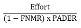
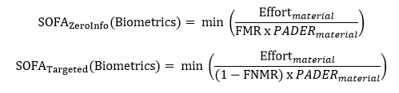

Fri, 16 Sep 2016 15:35:31 +0000
1. Intro
There are many different methods for authenticating users to applications, devices, and services, from “traditional” user names and passwords, to software OTP, to multiple modalities of biometric systems. Each authentication factor brings a unique set of security and user experience characteristics as well as potential vulnerabilities. With all these options, and the persistent drive towards stronger authentication, the emerging question is: “which technology fits my risk environment, today?”
There is no established standardized method for comparing and combining authentication mechanisms, in part due to the wide array of available technologies. The establishment of a common framework for measuring, comparing, and combining (such as in multi-factor implementations) authenticator strength could enable greater alignment of identity practices with organizational risk and promote greater federation and interoperability across sectors, markets, and enterprises. At a workshop on January 12 and 13, 2016, NIST presented a proposed starting point for this framework with a focus on biometric technologies.1 This paper represents a further refinement of this work and outlines a process intended to support the evaluation of biometric authenticators and—ultimately—multiple authentication mechanisms.
Why choose biometrics as a starting point? As an ever-expanding number of transactions are being invoked within mobile applications, biometric mechanisms built into smart phones and connected devices increasingly address user authentication. The result is a diverse and flourishing ecosystem, but one that generally lacks standards and guidance, that allow organizations to better understand the answers to questions such as: How well do the biometric systems work? How does their configuration impact the strength of the authentication event? How well do they protect against spoofing attacks? How does their performance impact security? How can they be effectively combined with other factors and what is the resulting strength of authentication? These are the very questions that the Strength of Function for Authenticators—or SOFA—framework is intended to address.
1.1. Purpose
This document proposes a framework for the measurement of biometric system strength and begins to consider its placement within a broader framework for strength of authentication. The framework is focused on positive authentication and one-to-one comparisons (i.e., not identification applications such as watch-list activities).
By advancing the ability to measure the strength of authentication for biometrics within an evaluation framework, this document seeks to: - Develop a greater understanding of the strength of biometric solutions. - Improve the alignment of their use with organizational risk-based decisions. - Enhance the ability of organizations to compare and combine different biometric and other authentication systems. - Provide guidance relating to biometric authentication system security and the protection of personal data.
Given organizations’ shift toward developing and implementing biometric solutions across a broad range of applications and channels, this framework is designed to provide a level of quantitative assurance to organizations that are seeking to use biometric technology to mitigate risk.
This paper will: - Present a strength equation to represent the Strength of Function for Authenticators (SOFA) with a focus on SOFA-Biometrics (SOFA-B). SOFA-B includes variables for False Match Rate (FMR), Presentation Attack Detection Error Rate (PADER), and Effort required to perform the attack. - Provide guidance for the baseline security required for authentication systems, so that areas not specific to biometric technologies are covered by core security controls (good cyber hygiene).
The framework considers two attack perspectives—“zero-information” and “targeted” attacks. It is modality agnostic, and is intended to be flexible to suit an organization’s own unique environment and needs.
1“Advanced Identity Workshop: Applying Measurement Science in the Identity Ecosystem” at NIST’s Gaithersburg, Maryland, campus.
2. Analysis of Strength of Biometric Authentication
During authentication, a typical biometric system follows a flow whereby:
- A biometric pattern is presented.
- That data is captured via a sensor.
- Signal processing typically takes place.
- A comparison of the captured data occurs, against reference data retrieved from storage.
- An authentication decision is made.
The diagram below depicts 11 points in a system where an attacker could potentially interject into the flow to interfere with the decision2. These 11 elements may all be self-contained within a single device (such as a mobile device) or distributed across multiple physical systems.

Many of these vulnerabilities fall into familiar categories that are found in other authentication systems, such as protecting data in transit or at rest, and cyber security controls should be used to mitigate such risks for biometric systems in the same way as other information systems. There are two notable vulnerabilities that fall outside the protection that can be provided by core cyber security controls:
- Presentation Attack (1) – This marks the point at which an attacker may present a fake biometric to a sensor. The failure rate of the system to detect an imposter making a presentation attack may generally be referred to as the PADER.
- Override Comparator (6) – This point of vulnerability relates to the sub-process of the comparator, which is the algorithm that compares an input from the sensor to a stored biometric sample for a user. The performance of the comparator depends on two major factors: how distinctive the biometric pattern is (i.e., the modality’s innate features and how many distinct individual patterns may exist) as well as the approach of a vendor’s algorithm to analyze the modality.
The focus on these two specific aspects of biometric systems is based on their unique characteristics relating to capturing, processing, and matching data during biometric authentication. We assume that the biometric system incorporates an adequate level of “cyber hygiene” (i.e. core security controls are in place). Failure to maintain proper cyber hygiene will result in a system that can be attacked by non-biometric-specific means and renders any inherent strength of function score invalid.
With these factors taken into consideration, the proposed strength equation is based on isolating the quantifiable aspects of these biometric technologies for a measure of inherent strength. The variables for the strength equation are covered in this document and include:
- FMR - The probability of a false match occurring during the comparison phase.
- PADER - The probability of a successful presentation attack during presentation of the biometric sample.
- Effort - In addition to FMR and PADER, the strength equation includes Effort to account for the combination of time, knowledge, resources, and potential consequences tied to conducting an attack.
We posit that FMR and PADER can be combined to produce a measure of strength that could be related to concepts such as password entropy. As such, FMR and PADER are the two key components of inherent biometric system strength, but the level of Effort required to attack an authentication system should also be considered, as an attack that requires a level of Effort that is disproportionate to the reward may deter attackers.
With FMR, PAD, and Effort serving as the major inputs, we state that SOFA is proportional to:

This equation represents a “zero-information” or “a priori” attack scenario where the attacker is not aiming to masquerade as a specific individual but is attempting to gain access by chance. In this case, a successful attack requires defeating the presentation attack detection (PAD) and having a successful match with the template in the system. This is analogous to a “brute force” attack on passwords.
The equation for a “targeted” attack scenario would be modified to reflect that, in this scenario, the attacker would create a sample that closely resembles an approved individual’s biometric characteristics. An attack in this scenario requires that the artifact used by the attacker defeats the PAD and that it is sufficiently close to the biometric sample represented by the template in the system. In this case, we state that SOFA is proportional to:

2Inspired by vulnerability diagram in ISO/IEC 30107-1: 2016 and N.K. Ratha, J.H. Connell, R.M. Bolle, “Enhancing security and privacy in biometrics-based authentication systems,” IBM Systems Journal, Vol 40. NO 3, 2001.
3. FMR and PADER Testing
### 3.1. Matching Error Rates Statistical analysis is essential when evaluating the performance and accuracy of matching algorithms and systems. Two characteristics of this analysis are of particular importance: Type 1 and Type 2 errors, or FMR and FNMR, respectively.
This document focuses on FMR, rather than FNMR, and how it affects the measurement of strength of an authentication system. FNMR can be described as a measure of user inconvenience, while FMR is regarded as a “measure of security.”3
3.2. Determining FMR and FNMR
#### 3.2.1. False Match Rate A zero-effort imposter attempt occurs when “an individual submits his/her own biometric characteristics as if he/she were attempting successful verification against his/her own template, but the comparison is made against the template of another user.”4 FMR is defined as the “proportion of zero-effort imposter attempt samples falsely declared to match the compared non-self template.”5 In other words, out of a total number of imposter attempts, the FMR is the percentage of those attempts that improperly result in a match.
3.2.2. False Non-Match Rate
A genuine transaction occurs when an individual submits his/her own biometric characteristics to be compared against their own biometric template. These samples are from the same individual and should result in a match. False Non-Match Rate (FNMR) is defined as the “proportion of genuine attempt samples falsely declared to not match the template of the same characteristic from the same user supplying the sample.”6 In other words, out of a total number of legitimate attempts, FNMR is the percentage of those attempts that improperly results in a non-match.
3.2.3. Match Rate Interdependence
When two biometric samples are compared, a biometric system will generate a similarity score. For example, a range of similarity scores may be 1 (for low similarity) to 100 (an exact match). A match or non-match decision is made based on where this score falls with respect to a decision threshold; a value above the threshold is considered a match, and a value below the threshold is considered a non-match. Setting this threshold is a risk-based decision because it results in errors, as some number of true match scores will fall below the threshold, while some true non-matches will fall above it. Changing the decision threshold to a higher value will decrease false matches, but it will also increase false non-matches. In other words, the FMR and FNMR are interdependent: adjusting the biometric system to decrease one of these rates will increase the other.
As discussed above, with respect to SOFA-B for zero information attacks, the statistic that is of interest is the FMR because it is a measure of the degree of difficulty to find an imposter that randomly matches a legitimate user. FNMR is a measure of convenience, signifying how often a legitimate user will be rejected. However, when FMR is measured, it is necessarily measured at an FNMR level because the two statistics are interdependent.
3.2.4. Testing Requirements
Empirical testing is required to determine the FMR of a biometric system, which is both an assessment of the inherent distinctiveness of the modality (answering the question: How well does this biometric pattern differentiate between individuals?) as well as of the matching performance of the particular biometric system under evaluation. Testing requirements for biometrics are covered in ISO/IEC 19795-1, and other parts of ISO/IEC 19795, depending on testing needs.7 ISO/IEC 19795-1 provides formulae for the number of subjects that need to be tested for statistically significant results.
The distribution of sample data is critical to measuring performance characteristics when testing algorithms in an offline manner. To obtain the most accurate results, the sample data should be distributed in a way that best reflects samples that will be collected while in operation. One way to verify performance measures is to run internal testing on in-house data. While this is good for initial testing and validation, third-party testing should be done to produce unbiased and independent results.8
3.3. Presentation Attack Detection (PAD)
One of the challenges in implementing biometric authentication systems is deploying safeguards to mitigate against presentation attacks, commonly known as biometric spoofing. This is especially true in uncontrolled environments where there is not an operator monitoring the placement or capture of a biometric. There are multiple ways to mitigate the risk of a successful presentation attack. The class of methods created to directly counter these attempts at the biometric sensor is known as PAD.
PAD is defined as “automated determination of a presentation attack,” which is a “presentation to the biometric data capture subsystem with the goal of interfering with the operation of the biometric system.”9 Categories of PAD include Artefact Detection (AD) and Liveness Detection (LD).
Error rates for PAD are expressed as classification errors. A PAD subsystem may incorrectly classify a bona fide presentation as an attack presentation or vice versa. To measure the strength of function for biometric authentication, the error of interest occurs when a PAD subsystem fails to detect an attack presentation, allowing an attacker positive access to an authorized user’s account.
At the PAD subsystem level, this error rate is known as the Attack Presentation Classification Error Rate (APCER) and is defined as the “proportion of attack presentations using the same Presentation Attack Instrument (PAI) species (PAIS) incorrectly classified as bona fide presentations at the PAD subsystem in a specific scenario.”10 At the biometric system level, this error rate is called the Imposter Attack Presentation Match Rate (IAPMR), which expresses the ratio of imposter attack presentations, all made with the same material, that are successfully matched to the targeted user (at a fixed operating threshold for the matching algorithm). In other words, IAPMR is the measure of the ability of a spoofed biometric to not only bypass the PAD subsystem but to be authenticated as a bona fide user.
3.3.1. Measuring and Characterizing the Performance of PAD
PAD error rates, such as IAPMR, must be determined through empirical testing. The goal for PAD testing is to test a set of materials (PAIS) that represent an attack potential level and determine the max error rate found among those materials.
Prior to testing, the initial step must be taken to identify the use case for the biometric product. The specific application will have an expected level of risk or attack potential, for which a set of PAI species should be evaluated to determine the rate that the biometric system rejects (and falsely accepts) each PAI species.11 To characterize the performance of the PAD at a given attack potential, the PADER of the most successful attack is used. However, to determine SOFA-B, both the PADER and the effort required to create the PAIS are taken into account. As will be demonstrated in the Conclusion, the combination that yields the lower value determines the SOFA-B.
Attack potential levels represent increasing levels of effort to mount an attack. Table 1 shows examples of two approaches for testing to determine the PADER: using the criteria of time, expertise, equipment, and source of the biometric characteristic to choose PAIS to test (in the second column) or testing a list of known attacks for a modality, preferably developed by a body of experts.12
Table 113 14 Spoof presentation attacks separated by levels based on time, expertise, and equipment

3.3.2. Reporting, Considerations, and Principles for PAD testing
Testing and reporting requirements for PAD testing are provided in ISO/IEC DIS 30107-3. There are additional aspects of testing that need to be considered to carry out an evaluation, including: - How many subjects should be represented in the N samples that are tested? Is it best to have as few as possible, as many as possible, or a diverse set with a small number of replicates per subject? - What size should N be for statistical significance? What amount of error can be tolerated?
The following represent current best practices and principles for PAD testing: - Testing by an independent party yields more reliable results for relying parties/consumers. - PAD system performance may vary greatly in an evaluation depending on whether the PAIS are known or unknown to the producer of the biometric system. Therefore, specifics about some PAIS that will be tested should not be disclosed to the company submitting a product for testing. - Certification of PAD performance should be valid for only a limited period of time. - Test results are more likely to reflect real-world results if the test data is representative of operational data.
3.3.3. Limiting the number of unsuccessful attempts
There are limits to what can be learned from testing PAD subsystems due to both the paucity of knowledge regarding how best to conduct testing (e.g. number of subjects versus number of samples) and the inherent uncertainty in this space due to the infinite PAI that could be used to attack a biometric system and evolving threats over time. Therefore, a biometric sensor must have a maximum number of unsuccessful attempts, after which the biometric sensor will no longer be available for authentication. That number can be set sufficiently low, such as ten attempts, or it could be related to the testing results and the max IAPMR, so that the limit is equal to or less than half of the number of thwarted attacks observed in testing for the most successful attack type.
4. Determining Effort
[This section is a place holder. Contributions are welcome; and more developments will be inserted here following the GIS workshop on September 20, 2016.]
Effort is listed as a third factor for the proposed SOFA measure as it has the potential to serve as a shared, level-setting metric between different authenticator types. How effort is determined is not yet established, though time, knowledge, and resources required for an attack will likely contribute to this measure. The potential consequences for an attacker being caught, or the difference between “zero-information” and “targeted” attack scenarios, could also be considered. Future studies of Effort may benefit from a normalized scale that spans across authenticator types for the purpose of comparison.
5. Cyber Hygiene
[This section is a place holder. Contributions are welcome; and more developments will be inserted here following the GIS workshop on September 20, 2016.]
Many of the vulnerabilities present within a biometric system, as illustrated in the attack diagram in 2. Equation/Ratio, are mitigated in the same way as vulnerabilities for other technologies. The two broad categories of these vulnerabilities are protecting data in transit and data at rest.
3 National Institute of Standards and Technology, “NISTIR 7296 MINEX04: Performance and Interoperability of the INCITS 378 Finger Print Template,” March 21, 2006. http://spin1-www.nist.gov/customcf/get_pdf.cfm?pub_id=150619&_ga=1.248059719.1159721241.1435844400
4 ISO/IEC 19795-1:2006
5 ISO19795-1
6 ISO19795-1
7 Testing requirements for biometrics systems are also covered in: ISO/IEC 19795-1:2006, ISO/IEC 19795-2:2007, ISO/IEC TR 19795-3:2007, ISO/IEC 19795-4:2008, ISO/IEC 19795-5:2011, ISO/IEC 19795-6:2012, ISO/IEC 19795-7:2011
8 Generalized best practices can be found in ISO19795-1 while guidance on modality-specific testing can be found in ISO19795-3
9 ISO/IEC 30107-1:2016
10 ISO/IEC 30107-1:2016
11 Attack potential is defined in ISO/IEC DIS 30107-3 as “measure of the effort to be expended in attacking a TOE, expressed in terms of an attacker’s expertise, resources and motivation.”
12 An independent lab may choose to combine the latter method with unknown PAIS that fall in the same attack potential level.
13 E. Newton, S. Schuckers, “Recommendations for Presentation Attack Detection: Mitigation of threats due to spoof attacks,” International Biometric Performance Conference, 2016.
14 Schuckers, Stephanie, “Presentations and attacks, and spoofs, oh my.” Image and Vision Computing, April, 2016. http://www.sciencedirect.com/science/article/pii/S026288561630052X
6. Conclusion
At the conclusion of Section 2, two proportions were presented for SOFA-B: one for zero information attacks and another for targeted attacks. Section 4 included discussion on determining the PAD error rate by testing a suite of materials. This has implications for the basis of the effort computation: Effort should also be computed per material tested. These values of Effort and PAD error should be used to compute SOFA-B scores to determine the minimum strength. Following the “weakest link” principle, the minimum SOFA score shall be used to characterize the strength of the authenticator.

NIST continues to research and develop the proposed SOFA equation to better understand the inherent strength of authentication systems. A number of opportunities exist for further study beyond this document, especially for the factors identified within this paper. Better defining Effort; understanding the dependencies between FMR and PADER; and determining the appropriate testing methodologies and representative types of artifacts for the two measures are a few of the opportunities for expansion. Once measures for inherent strength in biometrics mature appropriately, methods for comparing biometric systems against other authentication systems using the same type of quantitative measures will be the next focus for NIST work in this space.
Feedback is welcomed and highly encouraged as NIST continues this work. This document will be iteratively reviewed and updated based on community feedback. That feedback will be instrumental for determining the appropriate venue for additional work in the future. Comments can be emailed to sofa@nist.gov or posted on GitHub during the public comment periods.